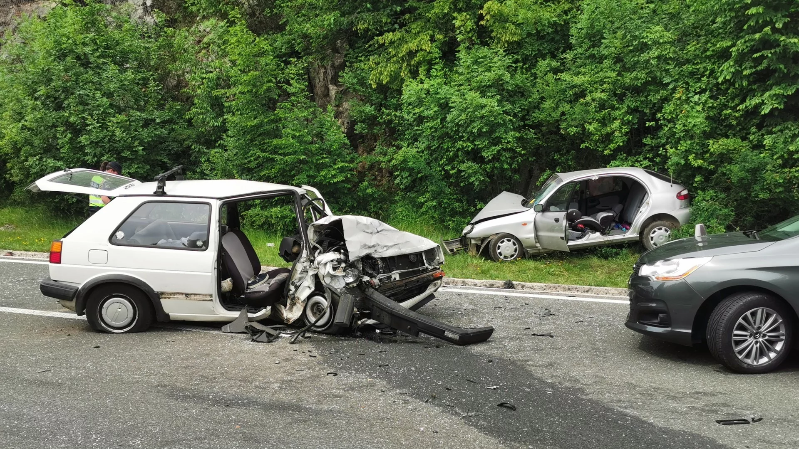
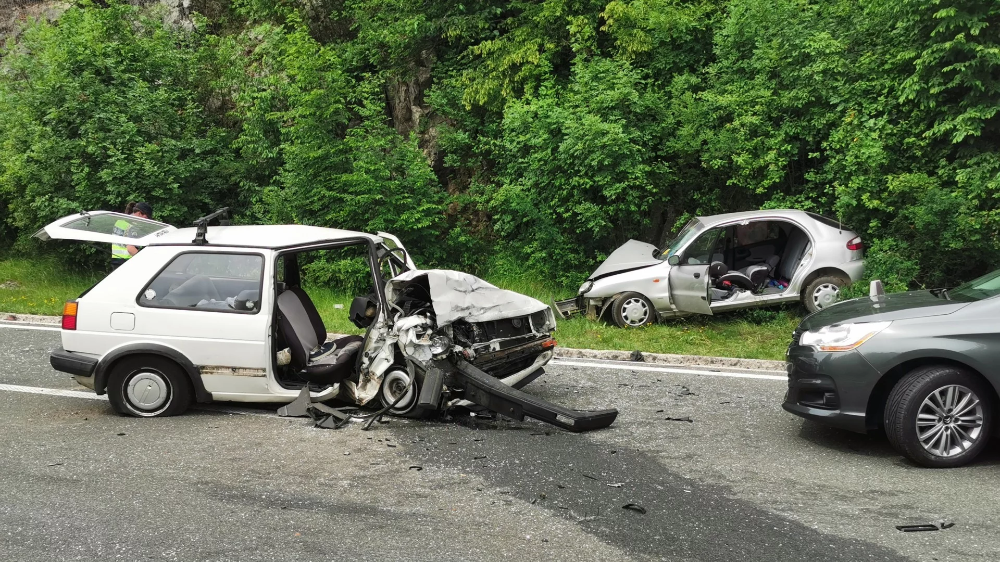

Troje ljudi je prevezeno u bolnicu, težina njihovih ozljeda još nije poznata, no neslužbeno se doznaje da osobe nisu u životnoj opasnosti.
Zbog obavljanja očevida, jedan kolnički trak je bio zatvoren.
 
